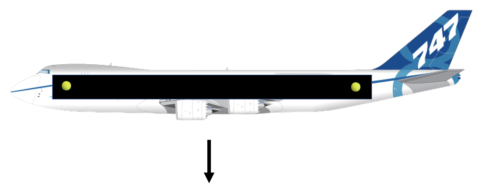

Forrige side🙂 🙁InertialsystemerPADLET
La oss se på et eksempel til. Vi har et fly i fritt fall uten luftmotstand:

Vi har også en ball i hver ende av flyet. Vil disse ballene forbli i ro i forhold til flyets referansesystem?? JA! Vi er jo i et inertialsystemNEI! De vil begynne å falle nedover
NEI! De vil begynne å falle oppoverNEI! De vil begynne å falle mot hverandre
NEI! De vil begynne å gå fra hverandreNEI! De vil gå i tilfeldige retninger